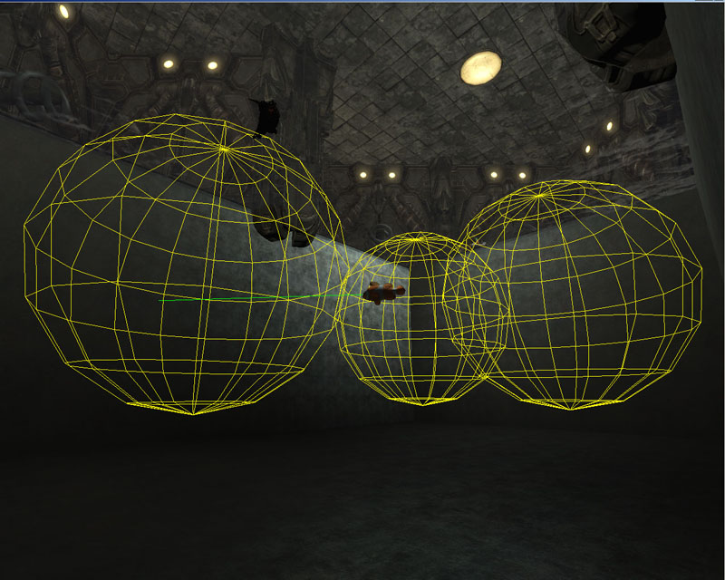
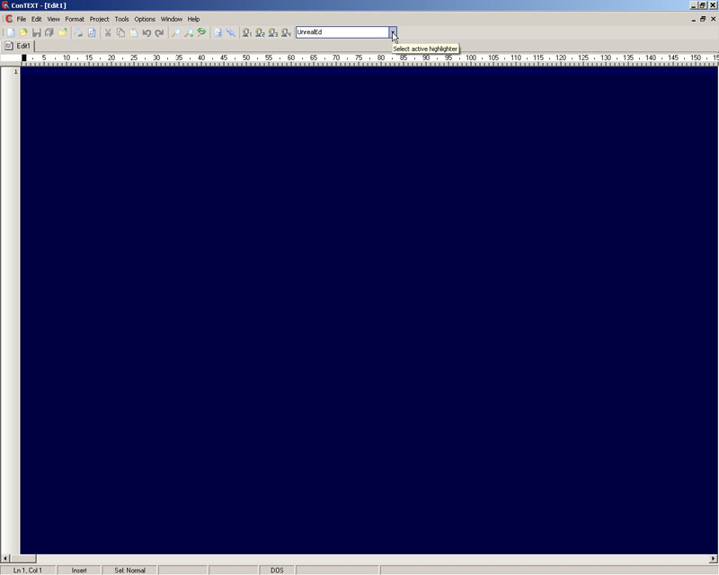
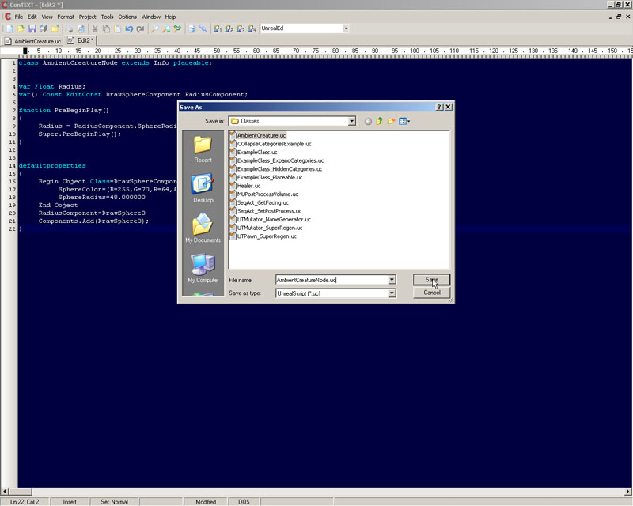
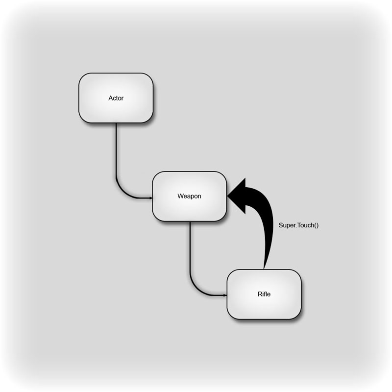
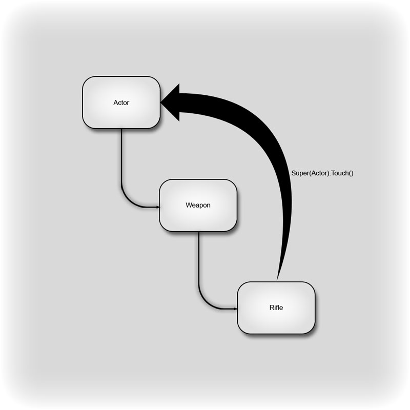
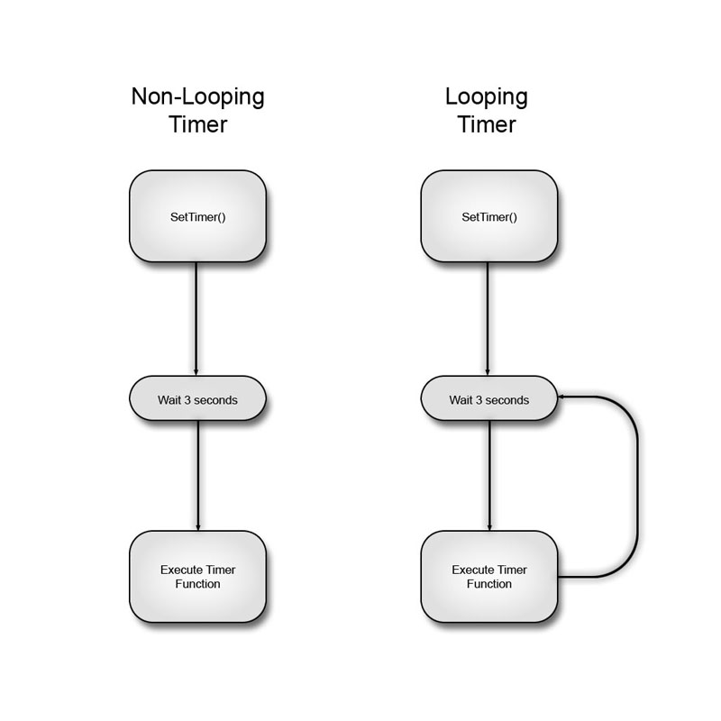
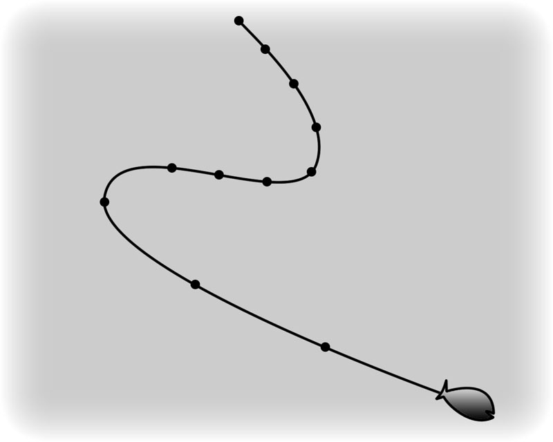
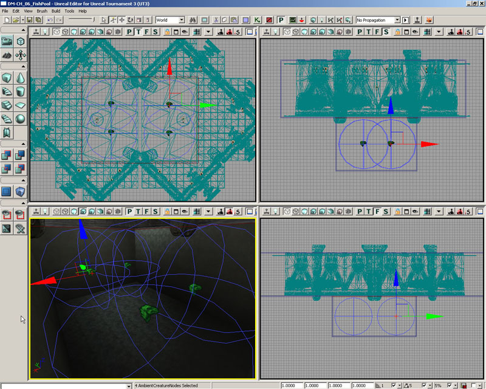
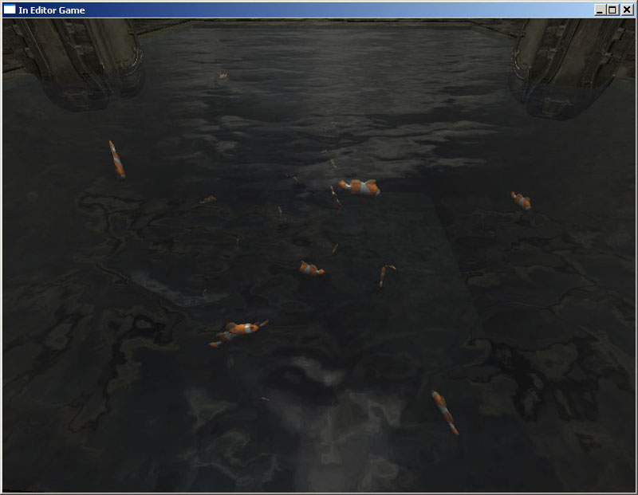

UDN
Search public documentation:
MasteringUnrealScriptFunctionsJP
English Translation
中国翻译
한국어
Interested in the Unreal Engine?
Visit the Unreal Technology site.
Looking for jobs and company info?
Check out the Epic games site.
Questions about support via UDN?
Contact the UDN Staff
中国翻译
한국어
Interested in the Unreal Engine?
Visit the Unreal Technology site.
Looking for jobs and company info?
Check out the Epic games site.
Questions about support via UDN?
Contact the UDN Staff
- 第 6 章 – 関数
- 6.1 概要
- チュートリアル 6.1 アンビエントクリーチャー、 パート I: ベースクラス宣言
- チュートリアル 6.2 アンビエントクリーチヤー、パート II: クラス変数宣言
- チュートリアル 6.3 アンビエントクリーチャー、 パート III: レンダリングおよびライティングコンポーネント
- チュートリアル 6.4 アンビエントクリーチャー、パート IV: 衝突および物理プロパティ
- 6.2 関数宣言
- チュートリアル 6.5 アンビエントクリーチャー、 パート V: SETRANDDEST() 関数
- 6.3 関数指定子
- 6.4 リターン値
- チュートリアル 6.6 アンビエントクリーチャー、 パート VI: SETDEST() 関数
- 6.6 関数オーバーライディング
- 6.7 SUPER キーワード
- チュートリアル 6.7 アンビエントクリーチャー、 パート VII: POSTBEGINPLAY() 関数
- チュートリアル 6.8 アンビエントクリーチャー、 パート VIII: TICK() 関数
- 6.8 TIMER 関数
- チュートリアル 6.9 アンビエントクリーチャー、 パート IX: SETRANDDEST タイマー
- チュートリアル 6.10 アンビエントフィッシュ、 パート I: クラスの設定
- チュートリアル 6.11 アンビエントフィッシュ、 パート II: DEFAULTPROPERTIES
- チュートリアル 6.12 アンビエントフィッシュ、 パート III: POSTBEGINPLAY() 関数
- チュートリアル 6.13 アンビエントフィッシュ、パート IV: SETRANDDEST() 関数
- チュートリアル 6.14 アンビエントフィッシュ、パート V: TICK() 関数
- 6.9 組み込み関数
- MATH(数値演算)
- Rand(Int Max)/FRand()
- Min(Int A, Int B)/FMin(Float A, Float B)
- Max(Int A, Int B)/FMax(Float A, FloatB)
- Clamp(Int V, Int A, Int B)/FClamp(Float V, Float A, Float B)
- RandRange(Float InMin, Float InMax)
- VSize(Vector A)
- Normal(Vector A)
- MirrorVectorByNormal(Vector InVect, Vector InNormal)
- FloatToByte(Float inputFloat, Optional Bool bSigned)
- ByteToFloat(Byte inputByte, Optional Bool bSigned)
- STRING(文字列)
- Len(Coerce String S)
- InStr(Coerce String S, Coerce String T)
- Mid(Coerce String S, Int i, Optional Int j)
- Left(Coerce String S, Int i)
- Right(Coerce String S, Int i)
- Divide(Coerce String Src, String Divider, Out String LeftPart, Out String RightPart)
- Split(Coerce String Src, String Divider, Out Array Parts)
- Repl(Coerce String Src, Coerce String Match, Coerce String With, Optional Bool bCaseSensitive)
- MISCELLANEOUS(その他)
- MATH(数値演算)
- 6.10 サマリ
- 補足ファイル
第 6 章 – 関数
本章では、関数を使用して動作を実行するクラスの機能について説明します。変数宣言とそれらの変数に対するデフォルトプロパティの設定以外は、事実上クラスに属するすべてのコードは、関数の中に含まれます。このため、何らかの面白いことを実施するクラス、すなわちプログラムを手に入れるためには、関数を必要不可欠となります。どんな関数があって、どのように動作するかをしっかり把握しさえすれば、わくわくするようなゲーム体験を実現する、とても有用なクラスを作成することも可能になるでしょう。6.1 概要
さて、実際のところ関数とはどのようなものでしょうか ? 関数は、クラス内で特別なタスクを実行するコマンドのサブセットに対して名前を付けたコンテナです。関連するコード行をまとめて名前を付けたユニットにすることで、プログラムの整理が進み、共通に利用されるコードの実行が容易になります。実行が必要な度毎にコードを書き出す替わりに、その関数名で関数が呼び出され、関数に関連付けられたコードが実行されます。関数に対するコードが終了したら、プログラムは、関数呼び出しを行った場所から継続します。 関数をより柔軟にするために、関数には、パラメータの形式で情報を取り入れ、また、値を出力する機能もあります。関数にプログラムの他の部分との連携を許せば、ゲーム内のアクタでは指示を与え、お互いに会話をする機能を持ちます。あるクラス内のデータは、他のクラスの関数によって処理可能となり、処理結果は元のクラスに返すことができます。この連携機能が無ければ、関数はより動的で無くなるため、まったく使いにくいものになるでしょう。 「第 4 章 : 変数」 で学んだように、関数内で使用するために、ローカル変数と呼ばれる特別な変数を宣言できます。これで、関数は使用および操作が可能なデータを生成できます。しかし、このデータは関数が実行されている間だけ存在しています。このデータは、関数内部以外のどこからもアクセスできず、関数の実行と実行の合間は、保持されません。関数が実行を開始した時に、ローカル変数宣言を読み出し、これらの変数を生成します。実行中は、通常の変数と同じように、任意の変更が実行可能です。関数が終了したら、すべてのローカル変数は破棄されます。 注記 : ローカル変数宣言は、関数内の他のすべての実行コードの前で実施しなければなりません。もし、ローカル変数宣言の前に、なんらかの実行コードが有った場合は、スクリプトをコンパイルする時にエラーが起こります。チュートリアル 6.1 アンビエントクリーチャー、 パート I: ベースクラス宣言
本章のチュートリアルのコースを通じて、プレーヤーに対し、より信用できる環境を提供するためにマップ内に配置できる、比較的単純なアンビエントクリーチャーを実装するために必要なクラスを生成します。魚の型一つを生成することに焦点を当てますが、オブジェクト指向を使用すれば、他の型の魚および他の型のクリーチャーの追加は、極めて簡単です。 一般的な機能を含む基底 AmbientCreature クラスの設定から始めましょう。 実質的に、このクラスは、移動先の位置を選択して、その位置に向かってクリーチャーを動かす設定をします。 クリーチャーが新たな目的地を選択可能な元の位置をマークする AmbientCreatureNode クラスも生成するつもりです。
図 6.1 – AmbientCreatureNode は、AmbientCreature のパスに対するロケーターとして使用されます。 1. ConTEXT をオープンし、 New from the File メニューを選択するか、ツールバー内の New File ボタンを押すことによって新規のファイルを生成してください。 UnrealScript ハイライターも同様に忘れず選択してください。

図 6.2 – 新規 UnrealScript ドキュメントを生成。 2. 上述したように、アンビエントクリーチャーに対する基底クラスの名前は、 AmbientCreature となります。このクラスは、 Actor クラスからの継承を受けます。スクリプトの先頭行に、以下を入力してこのクラスを宣言してください :
class AmbientCreature extends Actor;3. このクラスには、更にコードが追加されますが、ここでは、単にスクリプトを保存して、先に進み、 AmbientCreature クラスに対するクラス変数を宣言する時に必要となる AmbientCreatureNode クラスを生成できます。 File メニューから Save As を選択して、前回のチュートリアルで作成した MasterinUnrealScript/Classes ディレクトリに移動してください。この場所に、宣言内のクラス名に合わせて AmbientCreature.uc の名前でファイルを保存してください。

図 6.3 – AmbientCreature.uc スクリプトを保存してください。 4. ConTEXT で、 File メニューまたはツールバーから、もう 1 つ新規ファイルを生成して、 UnrealScript ハイライタを選択してください。 5. 新しいファイルの先頭行上で、 AmbientCreatureNode クラスを宣言してください。 AmbientCreature クラスとは異なり、このクラスは、 Actor クラスを拡張しません。 UnrealEd 内で簡単に、このクラスのアイコンを作成するために、 Info クラスからの継承を行います。アイコンが無ければ、ノードが配置された場所を素早く発見することはとても難しくなり、レベルデザイナーの作業が非常に困難になります。クラスを宣言するために以下のコードを追加してください。
class AmbientCreatureNode extends Info placeable;6. この新しいクラスに対して、変数宣言を 1 つ追加してください。この変数は Float で Radius という名前です。この値では、クリーチャーの動作にもう少しバリエーションを与えるために使用される、このノード周りの半径をデザイナーが指定が可能です。 var Float Radius; 7. Radius 変数は、編集可能で宣言されていないことにお気づきかもしれません。 DrawSphereComponent を使用して、エディタ内でもこの半径をビジュアライズして、設定する方法をデザイナーに与える予定です。ノードクラスに、 DrawSpereComponent を追加するために、以下の宣言を追加してください :
var() Const EditConst DrawSphereComponent RadiusComponent;8. 以下に示す defaultproperites ブロックを追加して、この Radius 変数にデフォルト値を設定してください :
defaultproperties
{
Radius=128
}
9. defaultproperties ブロック内に、 DrawSphereComponent を作成して、ノードにアタッチするために以下の行のコードを追加してください。
Begin Object Class=DrawSphereComponent Name=DrawSphere0 SphereColor=(B=255,G=70,R=64,A=255) SphereRadius=128.000000 End Object RadiusComponent=DrawSphere0 Components.Add(DrawSphere0);10. 最後のステップは、デザイナーのみが、エディタ内の DrawSphereCompnent にアクセスできるように、実行時の DrawSphereComponent の半径と等しくノードの Radius プロパティを設定することです。これは、 PreBeginPlay() 関数をオーバーライドして行います。
function PreBeginPlay()
{
Radius = RadiusComponent.SphereRadius;
Super.PreBeginPlay();
}
11. File メニューから Save As を選択して、再度 MasteringUnrealScript/Classes ディレクトリに移動します。宣言しているクラスの名前に合わせて AmbientCreatureNode.uc という名前でこの場所にファイルを保存してください。

図 6.4 – AmbientCreatureNode.uc スクリプトを保存してください。 このちょっとした設定が完了したら、次のチュートリアルから、基底クリーチャークラスの作成を始めることができます。 <<<< チュートリアルの終了 >>>>
チュートリアル 6.2 アンビエントクリーチヤー、パート II: クラス変数宣言
多くの変数がすべてのクリーチャーに共通となるため、基底の AmbientCreature クラスに追加を行うことができます。このチュートリアルでは、変数に対するすべての宣言を作成していきます。 1. ConTEXT をオープンし、まだオープンしていなければ、 AmbientCreature.uc ファイルをオープンしてください。 2. Enter キーを 2 回押して、クラス宣言から数行下に移ってください。 3. クリーチャーに対して目的地に関するロケーションマーカーの機能を提供するクラスを前回のチュートリアルで設定したことをご記憶でしょう。目的地として 1 つを選択するため、これらをクリーチャークラス内に保存する方法が必要です。与えられた情況では、どれだけの数のノードが存在するか分からないため、動的配列をこの用途で使用します。このプロパティに対するノードの追加もデザイナーに許可したいので、任意の個々のクリーチャーは、可能性のある目的地として利用するため、特定のノードで与えられるかもしれません。このクリーチャーと関連する AmbientCreatureNodes を保持する MyNodes 変数を宣言するため以下のコードを入力してください。var() array<AmbientCreatureNode> MyNodes;4. クリーチャーが、単に 1 つの目的地から次の目的地に移動する場合、ある時点では、動作が繰り返され予測可能であるように見え始めます。この発生を防ぐために、クリーチャーが一定方向に移動する時間の最小値と最大値を定めるつもりです。これにより、もっとランダムな動作パターンとなります。これらの変数にも float 値を使用します。 MoveDistance 変数宣言の下に、このコード行を追加してください :
var float MinTravelTime,MaxTravelTime;2 つの変数を 1 行のコード行で宣言していることにお気づきでしょう。これらの変数は相互に関係があるため、構成上の意図でまとめておきます。 5. Unreal は、クリーチャーが移動する方向と速度を決めるために、クリーチャーの Actor クラスから継承された Velocity 変数を使用します。クリーチャーを希望通りに移動させるために、この Velocity 変数を設定する場合は、動作の方向と速度を保持する必要があることを意味します。 後ほど説明するように、方向は、クリーチャーの希望する回転を設定するために一回だけ使用されます。それから、物理エンジンは、目的地に向けたクリーチャーの回転を引き起こします。いつでもクリーチャーが向いている方向を、動作の方向として使用して、それに速度を単に掛け合わせます。方向の値は、計算され、使用され、廃棄されるため、ローカル変数でも良いことを意味します。しかしながら、速度はクリーチャークラスでは、何度か使用する必要があり、この値を保持する変数が必要となります。スクリプトの次の行に、以下の内容を入力してください :
var Float Speed;6. クリーチャーは、様々なサイズとなりますので、クリーチャーをすべて同じサイズにすることは配慮に欠けます。個々のタイプのクリーチャーで最小と最大のサイズの指定を許可するために、これらの数値に対する変数を宣言し、それらに対する数値をそれぞれの子クラスに設定させます。これらの数値はクリーチャーの個々のインスタンスのランダムなスケールを計算するため使用されます。 Speed の宣言に続く行に以下の宣言を追加してください :
var Float MinSize,MaxSize;7. 基底クリーチャークラスに対して必要な変数が用意できました。作業内容を失わないようにファイルを保存してください。 <<<< チュートリアルの終了 >>>>
チュートリアル 6.3 アンビエントクリーチャー、 パート III: レンダリングおよびライティングコンポーネント
クリーチャークラスの主要機能に取り掛かる前の、セットアップの最終部分は、デフォルトプロパティです。物理、衝突設定が適切なタイプであり、メッシュの表示およびリットを適切に行う手段を持っているかをクリーチャーで確認する必要があります。最初に、レンダリングおよびライティングの設定に焦点を当てましょう。 1. ConTEXT をオープンして、まだオープンしていなければ、 AmbientCreature.uc ファイルをオープンしてください。 2. 最初のステップは、 defaultproperties ブロックを開始することです。変数宣言の下にいくらかのスペースを空けるため Enter キーを数回押してください。以下のコード行を追加して、 defaultproperties ブロックを開始してください :
default properties
{
3. 移動中のオブジェクトで有るため、動的に点灯を行う必要があります。クリーチャーをライティングするコストを最小に保つために DynamicLightEnvironment を使用するつもりです。そのために、 defaultproperties ブロック内にサブオブジェクトを生成し、クリーチャーの Components 配列に追加する必要があります。前の章で見たように、デフォルトプロパティ内のサブオブジェクトの生成は、クラスおよび新規サブオブジェクトに対する名前が続く Begin Object 構文の利用が必要です。サブオブジェクトの生成を終了するためには、 End Object 構文を利用します。
直下の行に移動するために Enter キーを押して、この部分のコードをインデントするために Tab キーを押してください。 DynamicLightEnvironment を作成するため、以下のコードを入力してください。
Begin Object Class=DynamicLightEnvironmentComponent Name=MyLightEnvironment End Object4. DynamicLightEnvironment を作成したら、 Components 配列にそれを代入する必要があります。ある型のコンポーネントを利用する時はいつでも、何らかの効果を得るために Components 配列に代入する必要があります。 DynamicLightEnvironment を生成するコードの下に以下のコード行を追加してください :
Components(0)=MyLightEnvironment単に以前作成されたサブオブジェクトの名前を使用して、それを Components 配列の最初の要素に代入します。 5. ここでは、アニメーションを扱わないために、クリーチャー用の表示メッシュとして静的メッシュを使用するつもりです。 DynamicLightEnvironment と同様に、これについても、サブオブジェクトの生成と Components 配列への代入が必要です。スクリプトの次の行に、以下のコードを入力してください :
Begin Object Class=StaticMeshComponent Name=MyStaticMeshサブオブジェクトの終了前に、ここでは、1つのプロパティを設定する必要があります。この StaticMeshComponent に以前作成した DynamicLightEnvironment を使用することを告げる必要もあります。次の行をインデントして、以下の行のコードを追加してください :
LightEnvironment=MyLightEnvironment最後に、サブオブジェクトを終了してください :
End Object6. さて、このコンポーネントも Components 配列に追加しなければなりません。スクリプトの次の行に以下のコードを入力してください :
Components(1)=MyStaticMesh7. 作業の結果を失わないようにスクリプトを保存してください。 <<<< チュートリアルの終了 >>>>
チュートリアル 6.4 アンビエントクリーチャー、パート IV: 衝突および物理プロパティ
基底クリーチャークラスのデフォルトプロパティに続いて、ここでは、衝突および物理に対するプロパティの設定を行いましょう。 1. ConTEXT をオープンして、まだオープンしていなければ AmbientCreature.uc ファイルをオープンしてください。 2. 最初に実行しなければならないことは、衝突ジオメトリとして何を使用するかを決定する Actor クラスから継承した CollisionComponents プロパティの設定です。衝突が起こったかどうかを計算する場合に何を使用するかをエンジンに伝えます。単に、簡略化された衝突メッシュのセットアップを行う、以前に作成した StaticMeshComponent を使用するつもりです。ファイル内のコードの最終行の下に、以下のコードを追加してください :CollisionComponent=MyStaticMesh3. 衝突を計算するために、どのジオメトリを使用するかをエンジンに知らせる CollisionComponent 設定と共に、クリーチャーが衝突すべき他のジオメトリがどの型かをエンジンに通知する必要があります。アンビエントクリーチャーですので、他のアクタと衝突したり、ブロックしたりはしたくありません。とは言っても、このクリーチャーは、ワールドとは衝突を行なわせたいです。魚のクリーチャーの場合、これは、お互いには衝突しないことを意味します。しかしながら、魚が水槽または池の中にいる場合は、水槽または池を構成するジオメトリでバウンドします。クリーチャーをワールドと衝突させるためには、以下の行のコードを追加して bCollideWorld を設定する必要があるだけです。
bCollideWorld=True4. 衝突のプロパティに対応しましたが、更に、クリーチャーに対する物理をセットアップする必要があります。単に、簡単な速度と回転の設定を行えば、その他の部分は注意が行き届いているため、 PHYS_Projectile 物理タイプを使用します。スクリプトの次の行に以下のコード行を追加してください :
Physics=PHYS_Projectile5. 設定する必要がある、最後の 2 つのプロパティは、このアクタがワールド内を動き回ることをエンジンに告げるためのものです。これを行うために 2 つのプロパティ bStatic および bMovable を設定する必要があります。スクリプトの末尾に以下のコード行を追加してください :
bStatic=False bMovable=True6. この行を追加することで、 defaultproperties ブロックを閉じてください :
}この時点でのスクリプトは以下のようになります :
class AmbientCreature extends Actor;
var() array<AmbientCreatureNode> MyNodes;
var float MinTravelTime,MaxTravelTime;
var float Speed;
var float MinSize,MaxSize;
defaultproperties
{
Begin Object Class=DynamicLightEnvironmentComponent Name=MyLightEnvironment
End Object
Components(0)=MyLightEnvironment
Begin Object Class=StaticMeshComponent Name=MyStaticMesh
LightEnvironment=MyLightEnvironment
End Object
Components(1)=MyStaticMesh
CollisionComponent=MyStaticMesh;
bCollideWorld=true
Physics=PHYS_Projectile
bStatic=False
bMovable=True
}
7. 作業結果を失わないようにファイルを保存してください。
<<<< チュートリアルの終了 >>>>
6.2 関数宣言
それでは、関数の宣言はどのように行えば良いのでしょうか？クラスや変数の宣言が class や var のキーワードでコンパイラに宣言で有ることを告げるのと同様に、関数宣言は function キーワードを使用します。もし関数が、何らかのデータを出力するならば、関数がリターンするデータの型が function キーワードに続きます。その後の関数名には、関数が持つ可能性のある、任意の引数、または、入力を含む一組のかっこが続きます。関数でデータを受け取る必要が無い場合は、かっこは空でも構いません。関数宣言の最後の部分は、関数が呼び出された時に実行されるコードを含む一組の中かっこです。関数宣言の簡単な例を以下に示します。
Function Int Clamp(Int Value, Int Min, Int Max)
{
if( Value < Min)
Value = Min;
else if( Value > Max)
Value = Max;
return Value;
}
宣言が function キーワードで始まっていて、この関数が整数の形式の値をリターンすることを示す Int の用語が続いていることにお気づきでしょう。この関数の名前は Clamp で、 Value、 Min および Max の 3 つの整数値を受け取ります。最後に、関数が呼び出された時に実行されるコードが、中かっこの中に見られます。お分かりかもしれませんが、このコードは、最初の入力値を、 2 番目と 3 番目の入力によって決められた範囲にクランプして、クランプされた結果の値をリターンします。
チュートリアル 6.5 アンビエントクリーチャー、 パート V: SETRANDDEST() 関数
今や、基底のクリーチャークラスの内容に踏み込む時です。開始する前に、クリーチャーで何を行う必要があるかを検討するべきです。以下は、 1 つの場所から他の場所に移動する際に実行しなければいけない基本的なアクションの一覧です :- 新たな目的地としてノードを選択する
- 現在の場所から目的地までの移動の方向を計算する
- 目的地の方にクリーチャーを向けるために希望する回転を設定する
- 移動の方向とクリーチャーの速さに基づき速度を設定する
function SetRandDest()ここで、コード行の下に以下のような開き及び閉じ中かっこを記述してください :
{
}
最後に、開き中かっこの後ろにカーソルを置いて、関数内のコードをインデントするために Enter キーに次いで Tab キーを押してください。
3. リスト上の最初のアクションは、新たな目的地としてノードを選択することでした。また、このノードは、ランダムに選択されるようにしたいです。このため、 MyNodes 配列内のインデックスとしてランダムな整数値を利用する必要があります。最初に、ランダムインデックスを取得して、ローカル変数内に保存します。以下のコードを入力して Idx という名前のローカルの Integer 変数を宣言してください :
local Int Idx;ここで、すべてのクラスがアクセスする Rand() 関数を使用しましょう。0 と関数に渡される値より 1 小さい値の間のランダムな整数値をリターンします。これは、 Rand(5) と入力したら、 0 から 4 までの値を得ることを意味します。これは、 MyNodes 配列内に格納された要素の数を得るために動的配列の Length プロパティを使用でき、配列のランダムなインデックスを得るための Rand() 関数の入力値に使えるため、この場合の目的にとてもよく合致する動作です 2 度 Enter キーを押して、以下のコードの行を追加してください :
Idx = Rand(MyNodes.Length);4. ランダムなインデックスを手に入れたら、 MyNodes 配列からノードを選択するためにそれを使用することができます。結果を格納するために、もう 1 つのローカル変数が必要ですので、 SetRandDest() 関数内にもう 1 つのローカル変数を宣言します。 Idx 変数に宣言に続く行に、以下に示す行のコードを記述してください :
local AmbientCreatureNode DestNode;MyNodes 配列にアクセスし、選択したノードを DestNode 変数に代入するために Idx 変数を利用する必要があります。 Idx 変数の数値を設定している行の下に以下のコード行を入力してください :
DestNode = MyNodes[Idx];この時点で、 SetRandDest() 関数は以下のようになるはずです :
function SetRandDest()
{
local Int Idx;
local AmbientCreatureNode DestNode;
Idx = Rand(MyNodes.Length);
DestNode = MyNodes[Idx];
}
5. ノードの選択を行いましたので、そのノードに到達するためにクリーチャーが移動しなければならない方向を計算する必要があります。 1 つの場所から、他の場所の方向を計算するためには、単に次の位置から、最初の位置を単に減算する必要があるだけです。この場合は、目的地として選択されたノードの Location から、クリーチャーの現在の Location を減算することを意味します。
この演算を実施する前に、結果を格納するための変数が必要となります。任意の Actor のワールドスペース内の現在の位置を保持する Location 変数は、 Vector です。そのため、このローカル変数も同じく Vector である必要があります。 DestNode 変数の宣言の後ろに、以下の宣言を追加してください :
local Vector MoveDirection;このコードでは、クリーチャーからノードへの方向を保持するために使用可能な MoveDirection という名前の Vector 変数を作成します。 6. DestNode 変数の値を設定している行の下で、移動の方向を決めるための演算を実行し、 MoveDirection 変数に結果を代入します。以下のコード行を SetRandDest() 関数に追加してください :
MoveDirection = DestNode.Location – Location;

図 6.5 – 新たな目的地への経路が計算されます 7. クリーチャーを新たな目的地に移動しようとしているのですから、移動しようとしている方向にクリーチャーも回転しておくことは、理にかなっています。クリーチャーの DesiredRotation プロパティを設定して、この処理を実行できます。一回設定されると、物理エンジンは、 RotationRate プロパティで指定された回転の変化率に従って、クリーチャーを新たな回転方向に向かって滑らかに回転します。この時点で考慮する必要のある唯一の部分は、 DesiredRotation プロパティを設定することです。 これは、直ぐに、判らないかもしれませんが、既に、このプロパティを設定するために必要な情報はすべて手に入れています。クリーチャーを向けたい方向を示すベクタである MoveDirection ベクタがありますので、 DesiredRotation プロパティに代入する値に変換するため、単に Vector を Rotator にキャストできます。スクリプトの次の行に、以下のコード行を追加してください :
DesiredRotation = Rotator(MoveDirection);

図 6.6 – クリーチャーは、新たな目的地に向かうために回転します 8. ここでは、クリーチャーに移動することを告げるため、 Velocity 変数を設定する必要があります。この変数は、その長さが実際の速さを決める Vector です。自己の Speed 変数を使用した速さの制御を可能にしたいので、移動の方向を決める長さ 1 のベクタが必要でした。この方法では、Speed 変数で指定された速さでノードに向かってクリーチャーを移動させるため、 Speed 変数で乗算した結果を Velocity 変数に代入できます。 次の行上で、 Velocity プロパティを設定するために以下のコードを追加してください :
Velocity = Normal(MoveDirection) * Speed;直ぐ上のコード内で Normal() と呼ばれる関数を使用したことにお気づきでしょう。本関数は、ベクタを取得して、同じ方向の単位ベクタすなわち長さ 1 のベクタを出力します。これは、MoveDirection 変数では、任意の大きさ情報では無く、方向の情報のみが必要なので、重要になります。 SetRandDest() 関数は、以下のようになっているはずです :
function SetRandDest()
{
local Int Idx;
local AmbientCreatureNode DestNode;
local Vector MoveDirection;
Idx = Rand(MyNodes.Length);
DestNode = MyNodes[Idx];
MoveDirection= DestNode.Location – Location;
DesiredRotation = Rotator(MoveDirection);
Velocity = Normal(MoveDirection * Speed);
}
9. 作業結果を失わないようにファイルを保存してください。
今や、 SetRandDest() 関数は仕上がりましたので、ランダムに新たな目的地を選択し、その目的地に向かって移動するように設定することで、いつでも呼び出すことが可能です。
<<<< チュートリアルの終了 >>>>
6.3 関数指定子
Classes および Variables には、その操作すべき方法をコンパイラに告げるため、宣言中で使用されるキーワードの組がありますが、同じように、関数も独自の指定子を持ちます。以下の説明で他に指定を行わなければ、これらの指定子は関数宣言の function キーワードに先行します。Static
この指定子は、グローバル関数と同じように、関数を含むクラスのオブジェクト参照変数の必要無しに任意の他のクラスから呼び出し可能な関数の生成を行う時に使用されます。関数を含むクラスのインスタンスが存在することには何の保証もありませんので、 non-static(非静的) 関数への呼び出しは static(静的) 関数の中からは行えず、関数を含むクラスからの変数を引数にすることはできません。これらの関数はサブクラス内でのオーバーライドが可能です。Native
この指定子は、関数が native(ネイティブ) コード(C++) で定義されているが、 UnrealScript 内からの呼出しを許可することを宣言します。本書は、 UnrealScript を取り扱っていますので、このキーワードを使用する局面は無いですが、スクリプトを詳細に調べている際は、しばしば見られるものです。Final
この指定子は、子クラスでの関数のオーバーライドの機能を無効にします。関数を Final として宣言すると、若干のパフォーマンス向上となりますが、その関数のオーバーライドの必要が全く無いことが確かな場合のみに使用されるべきです。この指定子は、関数宣言内で function キーワードの直前に置かなければなりません。関数のオーバーライドについてのより詳しい情報については、 6.6 関数オーバーライドを参照してください。Singular
この指定子は、関数の再帰的な呼出しを許可しません、すなわち、その関数内から同じ関数の呼び出しができないことを意味します。NoExport
この指定子は、 native(ネイティブ) 関数用の C++ 宣言の生成を行えないようにします。Exec
この指定子は、関数名と任意の指定引数をコンソールから直接キーボード入力して、ゲーム中の呼出しを可能にするような関数を宣言します。 Exec 関数は、特定のクラス内でのみ使用可能です。Latent
この指定子は、ゲームが進行中にバックグラウンドでその関数が動作する可能性があることを示します。 latent 関数は、「第 11 章 : 状態」で詳細に説明される状態コード内からのみ呼び出されます。この指定子は、 native(ネイティブ) 関数と共に使用された時のみ有効です。Iterator
この指定子は、アクタのリストを順番に繰り返すための Foreach コマンドと共に使用可能です。Simulated
この指定子は、この関数がクライアント側で実行されるかもしれないことを示しますが、この関数を持つアクタが、シミュレートされたプロキシまたは自律的なプロキシの時のみ実行されます。Server
この指定子は、実行するため、サーバーに関数を送ります。Client
この指定子は、実行するため、クライアントに関数を送ります。 Client 指定子を使用すると、その関数で Simulated も同じく指定されていることになります。Reliable
この指定子は、ネットワーク上の複写を取り扱い、 Server または Client 指定子と組み合わせて使用されます。 Reliable 関数は、アクタ内で他の複写された項目について、順番に複写されることを保証します。Unreliable
この指定子は、ネットワーク上の複写を取り扱い、 Server または Client 指定子と組み合わせて使用されます。Unreliable 関数は、 Actor 内で他の複写された項目について、順番に複写されることを保証せず、ネットワーク上のバンド幅が不十分な場合は全く複写を行わない可能性もあります。Private
この指定子は、関数を宣言されたクラス内からのみアクセス可能にします。サブクラスは、技術的にはこの関数を含んでいますが、直接この指定子を使用することはできません。しかしながら、サブクラスが、 private (プライベート) 関数を順次呼び出すような、いくつかの親クラス版の non-private(非-プライベート) 関数を呼び出す場合には、間接的に呼び出しが可能です。プライベート関数を、他のクラスからオブジェクト参照変数を使用した呼び出すことはできません。Protected
この指定子は、関数を、宣言されたクラスまたはそのサブクラスのみからアクセス可能にします。サブクラスは、 protected(プロテクテッド) 関数を含み、直接呼び出しを行えますが、他のクラスからのオブジェクト参照変数を利用した呼び出しはできません。Event
この指定子は、 native(ネイティブ) コードからも呼び出すことが可能な UnrealScript 内の関数を作成するため、関数の宣言時に function キーワードの代わりに使用されます。 native(ネイティブ) コードに関連するため、本書の適用範囲を超えています。しかしながら、 Unreal のスクリプトを見ていると、大変しばしば見掛けるものです。Const
この指定子は、 native(ネイティブ) 関数と共にのみ使用され、自動生成された C++ ヘッダ内で const で定義された関数となります。この指定子には、関数宣言内の引数リストが続きます。6.4 リターン値
関数で値が出力可能であることは、何度か述べてきました。これは、関数が元々呼び出された場所に求めたい値が返されるため、リターン値と呼ばれます。それでは、どの値をリターンするかを関数はどのように知るのでしょうか？ Return キーワードは、実行を止めてキーワードに続く何らかのものをリターンすべきことを、関数に知らせます。これは、簡単な値、変数または式の形を取ることができます。値が変数の形式の場合は、その変数の現在の値がリターンされます。式の場合は、式を評価した結果がリターンされる値となります。 注記 : Return キーワードは、それ自身としては、値をリターンしない関数の実行を停止するために使用できます。これは、関数の実行を望まないというような、ある特定の状況では、便利かもしれません。 非常に簡単な例を使用して、これがどのように動作するかを簡単に見ることができます。以下の関数は、 1 の値をリターンするだけのものです。
function Int ReturnOne()
{
return 1;
}
本関数は、以下のように Int 変数の値を設定するために使用可能です。
var Int MyInt; … MyInt = ReturnOne();このコード行を実行した後に、 ReturnOne() の呼出しで 1 の値をリターンしたため、 MyInt の値は、 1 と等しくなります。結局は、関数実行後のコード行は、以下のようになります :
MyInt = 1;関数呼出しが最初に実行されてから、コード行の残りの部分が評価されます。この例は、とても簡単ですが、リターン値は、より複雑な状況で、とても便利になる可能性があります。時には、関数呼び出しは、実際に、以下のようなドット表記の文字列の中に指定されることもあります :
OnlineSub.GameInterface.GetGameSettings().bUsesArbitrationこのコード行で見ている変数が何を表しているかは、実際は重要ではありません。このコード行では、関数呼び出しが、本質的に、変数と同様に使用されている点に気づくことが重要です。部分毎に分解すれば、何が行われているかがよりはっきりするでしょう。
OnlineSub.GameInterface.GetGameSettings()GetGameSettings() 関数がリターンするため、このドット表記の文字列の最初の部分では、 OnlineGameSettings オブジェクトを評価します。そのため、このコードが実施していることは、 "OnlineSub オブジェクトに属する GameInterface オブジェクトに属する OnlineGameSetting オブジェクトをリターンする" です。この部分を評価した後は、この行のロジックは、簡単に読めるようになります :
OnlineGameSettings.bUsesArbitrationさて、ここでは、概念化をより容易にするため、 OnlineGameSettings オブジェクトに属する bUsesAbritration 変数を単純に参照しています。どうして始めに OnlineGameSettings を直接参照するだけにして、関数呼び出しを回避しないのかと疑問に思うかもしれません。不適切に変数を変更すると重大な副作用となる可能性があるので、変数の提供または、特定の変数への直接アクセス許可は常によい考えであるとは言えないのがその理由です。すべてを順調に実行し続けるため、それらのオブジェクトへの参照をリターンするために、この関数は作成されました。
6.5 関数の引数
関数には、呼び出された時に、値を引き渡すまたは、情報を関数に送る能力があります。これらの値は、任意の型で良く、関数の内部での使用が可能になります。しばしば、関数に引き渡される値は変数の形式となっています。他に指定が無ければ、引数として関数に変数が渡された時に、変数のコピーが作成されて、関数内で変数の変更が発生してもコピーだけが影響を受けます。どのように関数に引き渡す引数が動作するかを知るために、次の例を見てみましょう。 以下の関数は、 1 つの値を他の 2 つの値の間でクランプするために使用されるでしょう。同様な関数は既に Unreal 内に存在していますが、これは、引数のデモを理解する助けになります。
Function Int Clamp(Int Value, Int Min, Int Max)
{
if( Value < Min)
Value = Min;
else if( Value > Max)
Value = Max;
return Value;
}
ここで、アクタの Health を 0 と 100 の値の間でクランプしたいとしましょう。上の関数を以下のような方法で使用することが可能です。
Health = Clamp(Health, 0, 100);このコマンドは、クランプした値をリターンする Clamp 関数を実行して、 Health 変数を代入します。関数では Health 変数のコピーを対象に作業しているだけで、直接修正を行っていないため、値の代入が必要でした。次のセクションで参照するように、パラメータとして渡された変数の直接操作を関数に強制することができます。
関数引数指定子
関数引数指定子は、関数引数にだけ関連する変数指定子の特別なセットです。Out
引数が Out 指定子を使用して宣言された時は、作業用のコピーを作成する代わりに、関数に渡された変数が直接関数によって修正されます。これは、基本的には関数に 1 つ以上の値のリターンを許可します。 Out 指定子を使用した時の差異を示すために、前回の Clamp() 関数の例を使用しましょう、今回だけは Out 指定子を使用するため、関数は値をリターンしません。
Function Clamp(Out Int Value, Int Min, Int Max)
{
if( Value < Min)
Value = Min;
else if( Value > Max)
Value = Max;
}
また、アクタの Health を 0 と 100 の間でクランプしたい場合は、上の関数は、次のように使用されます。
Clamp(Health, 0, 100);前回の例とは異なり、実行しなければならないことは、適切なパラメータと共に関数を呼び出すだけです。関数で Health への正しい値の代入を取り扱うため、リターン値は不要です。
Optional
引数が Optional 指定子を使用して宣言された時は、関数の引数に値を渡さずに呼び出すことができます。 Optional 引数は、もし関数に値が渡されない場合に使用されるデフォルト値を持つことができます。デフォルト値が指定されておらず、値が渡されなければ、ゼロを表す値 (パラメータの型に依存して 0、 0.0、 False、 “”、 None、 その他) が使用されます。 optional パラメータに対するデフォルト値の定義は、以下のような方法で行われます。
Function Clamp(Out Int Value, Optional Int Min = 0, Optional Int Max = 1)
{
if( Value < Min)
Value = Min;
else if( Value > Max)
Value = Max;
}
本宣言は、呼び出し時に、関数の引数に値が渡されない場合に、 Min を 0 に、 Max を 1 にするように定義します。 以前と同じ状況で使用すると、以下の引数で関数を呼び出すことにより 0 および 100 の間で、プレーヤーの Health をクランプできます。
Clamp(Health,, 100);デフォルト値が使用したい値と同じであるため、 2 番目の引数は、指定されていないことに注目してください。 3 番目の引数については、デフォルト値が 1 であり、希望する値で無いため、100 を渡さなければなりません。最後の引数では無い optional 引数で値を指定しない時は、関数で次に値を渡す引数がどれかを知るため、その引数の位置に、空白を残しておかなければなりません。 optional 引数が最後の引数であれば、空白を残しておく必要は無く、すべて省略できます。
Coerce
引数が Coerce 指定子を使用して宣言された時は、関数に対して引数用に渡された値は、 UnrealScript が通常に変換を実行するかどうかに関係なく、引数の型へ変換されます。 これは、 `log() 関数を実行する Coerce 指定子の、最も一般的な使用例で、 String 引数で最もしばしば利用されています。`log( coerce string Msg, optional bool bCondition=true, optional name LogTag='ScriptLog' );Msg 引数として渡されるデータに任意の型を許可する Coerce 指定子を使用して、文字列に強制的に変換します。これは、スクリプトのデバッグを行う際にはとても有用となります。特定のオブジェクトを保持すべきオブジェクト参照変数を持つことが可能です。このケースに当たるかどうかを決めるために、 `log() 関数に変数を渡すと、オブジェクトの文字列表現、この場合は名前をログファイルに出力します。
チュートリアル 6.6 アンビエントクリーチャー、 パート VI: SETDEST() 関数
本チュートリアルでは、 MoveDirection を計算し DesiredRotation を設定し、 SetRandDest() 関数から Velocity を設定する機能を取り出し、他の関数内に設置します。この機能を分離することで、目的地をランダムに選択するだけでなく、必要に応じて特定の目的地を設定することもできる能力を追加しました。これにより、クラスはより柔軟になり、以降の章でも使いやすくなります。 1. ConTEXT をオープンし、まだオープンしていなければ、 AmbientCreature.uc ファイルをオープンしてください。 2. SetRandDest() 関数からコードの部分を集積して新たな関数を宣言する必要があります。 SetRandDest() の数行下に以下に示すコード行を追加してください :
function SetDest(AmbientCreatureNode inNode)
{
}
お気づきのように、 SetDest() 関数は、 AmbientCreatureNode を取得します。ここでは、ランダムなノード選択も、特定のノード選択も許可されていますが、次いで、この関数に引き渡されます。
3. 始めに、必要なローカル変数宣言を SetRandDest() 関数から、 SetDest() 関数へ移動します。 3 つの宣言のうち、関係するのは MoveDirection 宣言のみです。
SetRandDest() 関数内の以下に示す行のコードを選択して、 Ctrl+X を押して切り取りを行ってください。
local Vector MoveDirection;4. SetDest() 関数の開き中かっこと閉じ中かっこの間で、 Ctrl+V を押して変数宣言を貼り付けてください。ここで SetDest() 関数は、以下のようになります :
function SetDest(AmbientCreatureNode inNode)
{
local Vector MoveDirection;
}
5. 次に、SetRandDest() から MoveDirection、 DesiredRotation および Velocity 変数を設定する責任を負うコード行を選択して、 Ctrl+X を押して切り取りを行ってください :
MoveDirection= DestNode.Location – Location; DesiredRotation = Rotator(MoveDirection); Velocity = Normal(MoveDirection * Speed);6. SetDest() 関数の変数宣言の後ろで、 Ctrl+V を押してコード行を貼り付けてください。 DestNode のインスタンスを 1 つ、関数の引数の名前に合うように inNode に変更してください。 SetDest 関数は以下のようになりました :
function SetDest(AmbientCreatureNode inNode)
{
local Vector MoveDirection;
MoveDirection= inNode.Location – Location;
DesiredRotation = Rotator(MoveDirection);
Velocity = Normal(MoveDirection * Speed);
}
7. 目的地に対して、ある種のぶれも追加したいと思います、つまりクリーチャーは、常に、ノードの位置に直接移動するだけではなく、ノードの周りの半径内へ移動することもできるようになります。初めに、現在のローカル変数宣言を以下のように変更して、 MoveOffset という名前の、もう 1 つのローカル Vector を追加してください :
local Vector moveDirection,MoveOffset;8. この MoveOffset 変数は、初めにランダム Vector を得て、それから、それに目的にノードの Radius 変数で指定された好みの半径を掛け合わせることで計算されます。この計算を実行するため SetDest() 関数内の他のコードの前に、以下に示す行を追加してください :
MoveOffset = Normal(VRand()) * inNode.Radius;9. それから、新たな MoveOffest 値を利用するために、MoveDirection を設定する行を以下のように変更してください :
MoveDirection = (inNode.Location + MoveOffset) – Location;

図 6.7 – 目的地は、ノードの半径内となっている。 10. さて、 SetRandDest() 関数に戻り、以下のコード行を追加してください :
SetDest(DestNode);完成した SetRandDest() 関数は、現在のところ、以下のコードで構成されているはずです :
function SetRandDest()
{
local Int Idx;
local AmbientCreatureNode DestNode;
Idx = Rand(MyNodes.Length);
DestNode = MyNodes[Idx];
SetDest(DestNode);
}
11. 作業結果を失わないようにファイルを保存してください。
<<<< チュートリアルの終了 >>>>
6.6 関数オーバーライディング
クラスを便利にするために、クラス内に関数を作る方法を理解しました。また、クラスを拡張することによって、クラス内に含まれた関数は、サブクラスに渡されることを知りました。サブクラス版の関数にいくらか機能を追加したり、まったく異なる何らかの動作をさせたい時には、どうしたらよいのでしょうか ? UnrealScript は、サブクラスに対し、関数の親の版をオーバーライドする機能を提供している。これは、サブクラスでは、親クラスの関数と同じ引数とリターン値で同じ名前の関数で異なる動作が可能なことを示します。 この機能は、継承の利点も享受しながら、必要に応じて親クラスとサブクラスに違う動作をさせるという柔軟性を持たせることができるという点で非常に効果があります。更に、実装もとても簡単です。関数の親のバージョンをサブクラスにコピーして、関数内に含まれるコードに対して、任意の希望する変更を行う必要があるだけです。これにより、親のバージョンの代わりに、この関数の新たな版が使用されることをコンパイラに告げます。
図 6.8 – 個々の子クラスの Draw() 関数は、親の関数とは異なる動作を行います。 サブクラス内の関数をオーバライドする Unreal Tournament 3 では、一般的で、とても簡単な例を見てみましょう。この例では、 Touch() 関数は、うまく動作するはずです。この関数は、 Actor クラスで定義されていますが、機能の提供は行いません。これは、基本的に、何らかの動作でオーバーライドされるように待機している空の関数です。 Actor クラスを拡張して、 Touch() 関数をオーバライドすることで、このアクタにタッチする任意のアクタの名前を Log ファイルに出力するというような、何らかの動作を実行する機能を拡張している Actor クラス内のすべての機能を利用することができます。
class Toucher extends Actor placeable;
event Touch(Actor Other, PrimitiveComponent OtherComp, vector HitLocation, vector HitNormal)
{
`log(Other);
}
継承や、関数のオーバーライドの効率性は、この例からすぐに分かるでしょう。まったく新しく完全に機能するクラスを作成するために、ほんの少しのコード行を記述する必要があるだけでした。 Actor クラスは 3000 行以上の長さのコードですが、このクラスは、ほんの数行のコードだけで、すべての機能と追加機能を手に入れられます。
6.7 SUPER キーワード
サブクラス内で関数をオーバーライドすることで、継承された関数によって実行される動作を変更可能です。新たな機能を得るために関数をオーバライドする能力を利用した場合に、親の関数の機能を保持したい時には何が起こるのでしょう？関数のサブクラス版に、関数の親クラス版からのコードを単純に含めればよいと推測するかもしれませんが、それが、一番効率的な解決法で無いことは確かです。 UnrealScript では、関数の親の版を呼び出す際には、サブクラスで Super キーワードを使用します。このようにすると、サブクラスでは、階層内で上となる個々のクラスのすべての機能を保持しつつ機能を追加することができます。親クラスの Touch() 関数を呼び出すために Super キーワードを使用する際の構文は、以下のようなものです。Super.Touch();

図 6.9 – Rifle クラスは、 Weapon クラスの Touch() 関数を呼び出します。 更に、クラス名は、階層内の上の特定のクラスから関数を呼び出すことをサブクラスに許可するためにSuper キーワードを指定可能です。ここに Actor(アクタ)、 Weapon(武器) および Rifle(ライフル) の 3 つのクラスがあり、Weapon が Actor から拡張され、Rifle が Weapon から拡張されている階層構造を作っているとしましょう。個々のサブクラス、つまり Weapon および Rifle は、対応する親クラスからの Touch() 関数をオーバーライド可能です。もし、 Rifle クラスが Actor クラスの版の Touch() 関数を呼び出したい場合は、以下のような方法で実行できます。
Super(Actor).Touch();この指定では、たとえ Rifle の親が Weapon でも、そのクラスのバージョンの関数をスキップし、 Actor クラス版の Touch() 関数を実行します。

図 6.10 – Rifle クラスは、 Actor クラスの Touch() 関数を呼び出す。 注記 : 上記の関数呼び出しを簡単にするために、引数は放置されています。
チュートリアル 6.7 アンビエントクリーチャー、 パート VII: POSTBEGINPLAY() 関数
ここまでで、ランダムな目的地を選択し、クリーチャーを目的地へと移動するため、ベースクリーチャークラスに関数を追加しました。この全体の動作を設定するメソッドをまだ実装していないことにお気づきかもしれません。追加したばかりの機能を使用するため、レベルが始まる時に、 SetRandDest() 関数を呼び出す手段が必要です。これが、まさに本チュートリアルで実施したいことです。同時に、 Speed(速さ) と RotationRate(回転速度) の多少の変化の設定と同じく、個々のクリーチャーに対してランダムなサイズを設定する機能を実装します。 1. ConTEXT をオープンし、まだオープンしていなければ、 AmbientCreature.uc ファイルをオープンしてください。 2. レベル開始後に、個々の Actor 上のエンジンによって呼び出される PostBeginPlay() 関数を使用する予定です。この関数をオーバライドして、クリーチャーの動作の初期化と同時にクリーチャーに対するサイズ、速さおよび回転速度を設定する理想的な場所を提供します。 クラス内の関数の位置は重要ではありませんが、クラス変数宣言のすぐ後ろに PostBeginPlay() 関数を置くことにしましょう。これで、クラス内の関数が実行順に並ぶことになります。 クラス変数の宣言と SetRandDest() 関数の間に、何行かの空白を作成し、以下のように、 PostBeginPlay() 関数に対する宣言を追加してください。
function PostBeginPlay()
{
}
3. 最初に、この関数をオーバーライドする際に行いたいことは、 Super キーワードを使用して親のバージョンの関数が実行されることの確認です。これにより、追加する予定の機能の他に、いくつかの一般的な設定動作の実施を確実に行います。中かっこの内部に、以下の行を追加して PostBeginPlay() 関数の親バージョンを呼び出してください。
Super.PostBeginPlay();4. クラス変数を宣言した時に、個々のクリーチャのサイズに対する最小値および最大値として使用される変数を 2 つ宣言しました。ランダムな値を取得するために RandRange() という名前の関数と共にこれらの値を使用したいと思います。クリーチャーのサイズを設定するために SetDrawScale() と呼ばれる関数でこれらの値を使用する予定です。 PostBeginPlay() 関数の次の行に、以下のコード行を追加してください :
SetDrawScale(RandRange(MinSize,MaxSize));この処理すべてが、 1 行だけで記述可能であることにお気づきでしょう。これは、 RandRange() 関数が Float 値をリターンし、一方、 SetDrawScale() 関数が、引数として Float 値を取り込んでいるからです。すなわち、一つの関数呼び出しを、他の関数呼び出しの引数として使用することができ、追加のローカル変数を必要とせずに、すべてが完全に動作します。

図 6.11 – 個々のクリーチャーのサイズは、サイズの範囲からランダムに選ばれます。 5. 1 つのクリーチャーと、次のクリーチャーとの間で Speed および RotationRate プロパティに多少の変化を与えたいと思います。しかしながら、これら 2 つのプロパティは、相互に関連しています。より速い速さのクリーチャーは、同時により速い回転速度が必要であることを意味します。以前のステップで使用したものと同様の randRange() 関数を使用して、この操作を行いたいと思いますが、今回は、同じランダム値で、 Speed および RatationRate の双方の積算ができるように、ローカル変数内に値を保存します。 既存の PostBeginPlay() 関数内のコード行を、数行下に移動してから、以下のコードを追加して RandVal という名前の Float 変数を宣言してください :
local Float RandVal;ここで、 0.5 と 1.5 の間のランダム値を選択することによって RandVal 関数の値を設定します。基本的に、 この処理で、 Speed および RotationRate 変数のデフォルト値から 0.5 の偏差を得ます。PostbeginPlay() 関数の最後の行の後ろに、以下のコード行を追加してください :
RandVal = RandRange(0.5,1.5);6. ここでは、単に RandVal 変数で、 Speed および RotationRate 変数を積算する必要があるだけです。 Speed および RotationRate 変数に対して変化を与えるために、 PostBeginPlay() 関数に、これらの 2 行のコードを追加してください :
RotationRate *= RandVal; Speed *= RandVal;

図 6.12 – 左側のクリーチャーは、低い Speed および RotationRate を持ち、一方、右側のものは、高い Speed および RotationRate を持ちます。 7. この時点で、実行すべきことは、クリーチャーを動かし始めるために SetRandDest() 関数を呼び出すだけです。 PostBeginPlay() 関数の末尾に以下のコードを追加してください。
SetRandDest();PostBeginPlay() 関数は以下のようになるはずです :
function PostBeginPlay()
{
local Float RandVal;
Super.PostBeginPlay();
SetDrawScale(RandRange(ScaleMin,ScaleMax));
RandVal = RandRange(0.5,1.5);
RotationRate *= RandVal;
Speed *= RandVal;
SetRandDest();
}
8. 作業結果を失わないようにファイルを保存してください。
<<<< チュートリアルの終了 >>>>
チュートリアル 6.8 アンビエントクリーチャー、 パート VIII: TICK() 関数
現在のセットアップでは、クリーチャーは、目的地に向くように回転しながら、目的のノードに向かって動き始めます。これは、視覚的な見地から見ると非現実的な結果となります。これを正すために、クリーチャーが向いている方向に常にクリーチャーの速度を与えるようにします。この方法で、次の目的地に顔を向けている間、クリーチャーの移動経路は、曲線となります。 1. ConTEXT をオープンし、まだオープンしていなければ、 AmbientCreature.uc ファイルをオープンしてください。 2. クリーチャーの Velocity が、常に、現在向いている方向にクリーチャーを動かすことを確実にするために、 Tick() 関数を使用します。この関数は、エンジンによって、自動的にフレーム毎に呼び出されるので、目的には、良く合致しています。 SetGoal() 関数の後ろに、 以下の Tick() 関数の宣言を追加してください :
function Tick(Float Delta)
{
}
3. PostBeginPlay() 関数と共に、この関数の親のバージョンが実行されることを確実にしたいため、中かっこの間に、以下のコードを追加して Super キーワードを使用する関数呼び出しを記述します。
Super.Tick(Delta);ここで、親の関数に Delta 引数を渡していることに留意してください。 4. ここで、 SetDest() 関数内で Velocity を設定しているコードを選択して、その場所から切り取ります。以下のように表示されたコード行を見つけて選択してください。それから、コード行を切り取るために Ctrl+X を押してください。
Velocity = Normal(MoveDirection) * Speed;5. Tick() 関数の次の行で、このコード行を貼り付けるために Ctrl+V を押してください。 6. MoveDirection 変数をクリーチャーが向いている方向を示す式で置き換える必要があります。クリーチャーの Rotation プロパティを Vector にキャストすると、その結果はクリーチャーが向いている方向のベクタとなります。コード行の MoveDirection の存在する部分を、以下に示す式で置き換えてください :
Vector(Rotation)Tick() 関数は、現在、以下のようになっているはずです :
function Tick(Float Delta)
{
Super.Tick(Delta);
Velocity = Normal(Vector(Rotation)) * Speed;
}

図 6.13 – クリーチャーは、一定位置で向きを変える代わりに、曲線をたどって向きを変えるようになりました。 7. 作業結果を失わないようにファイルを保存してください。 <<<< チュートリアルの終了 >>>>
6.8 TIMER 関数
個々の Actor 内に存在している Timer() 関数では、 特定の時間が経過した後に、 Actor が実行できる特別な機能が利用できます。これは、一度限りのイベントかもしれませんし、ある特定の時間が経過した後に、繰り返し発生するものかもしれません。 Timer 関数の利用に対する適切な説明を行う、いくつかの動作の良い例は、ピックアップの re-spawning(再スポーン) でしょう。 アイテムがプレーヤーによって取得されると、ゲーム中にアイテムをもう一度プレーヤーに利用可能にするために、ピックアップクラスは、特定の時間経過後にアイテムを re-spawn(再スポーン) するタイマーを起動します。
図 6.14 – 左側は、ループしないタイマーであり、右側は、ループするタイマーです。 Unreal Engine 3 では、現在、クラス内に複数のタイマー関数を持つことが可能であり、それらのうち任意の関数が同時に動作可能です。以前は、一度限りの動作のみが可能であったのに対して、現在は、クラス内で必要な個々の時限の動作に対して別々の関数の指定が可能になりました。すべて同時に動作させることも可能な複数のタイマーを利用すると、より複雑な行動ができるようになり、プレーヤーは、より興味深くゲームのプレイができるようになります。以下に示すように、引数なしの関数として宣言された任意の関数が、タイマー関数として利用できます :
function NewTimer()
{
// ここで、何らかの処理を行います
}
SetTimer
タイマー関数を起動するためには、他の関数を使用しなければなりません。 SetTimer() 関数は Actor クラスに組み込まれており、タイマー関数のパラメータをセットアップして、タイマーを起動するために使用されます。 SetTimer() 関数は、いくつかの引数を持っていますので、ここで簡単に見てみましょう。float inRate
本引数は、タイマー関数内の動作を実行する前に待機する時間量を指定します。optional bool inbLoop
本引数は、タイマーが指定時間後に一回だけ起動されるか、指定した時間間隔が経過したら毎回起動を継続するかを指定するために使用されます。このパラメータは、オプション指定です。 SetTimer() 関数の呼び出し時に省略されていたら、タイマー関数内の動作は、一回だけ実行されます。optional Name inTimerFunc
本引数は、タイマー関数として関数名の使用を許可します。これは、複数のタイマーを使用するための機能です。本引数は、 Timer のデフォルト値を持ち、オプション指定です。これは、 SetTimer() 関数が呼び出された時に省略されていたら、組み込みの Timer() 関数が使用されることを意味します。optional Object inObj
本引数は、非-Actor 派生クラスに対してタイマー機能の追加ができるようにします。ここで、 Object が指定された場合は、通常 SetTimer() 関数を呼び出す Actor 上ではなく、 Object上で inTimerFunc 引数によって指定された関数が呼び出されます。また、 inTimerFunc 引数によって指定された関数は、 SetTimer() 関数を呼び出した Actor 内では無く、ここで指定された Object のクラス内に含まれなくてはなりません。ClearTimer
ClearTimer() 関数はタイマーの実行を停止するために使用可能です。これは、主に、タイマー関数が以前に継続的に起動するように設定されていて、既に不要になっているような時に便利です。このような場合は、 ClearTimer() 関数を呼び出して、タイマー関数の起動を行わせないようにします。この関数は、 2 個の引数を持ちます。 注記 : SetTimer() 関数の inRate 引数を 0.0 の値で呼び出せば、 ClearTimer() 関数の呼び出しと同じになります。optional Name inTimerFunc
本引数はクリアされるべきタイマー関数の名前を指定するために利用されます。本引数はオプション指定であり、 Timer のデフォルト値を持ちます。これは、 ClearTimer() 呼び出し時に未指定の場合は、組み込みの Timer() 関数がクリアされることを意味します。optional Object inObj
Object が指定されていたら、本引数は、 ClearTimer() 関数を呼び出す Actor の代わりに、指定した Object に対するタイマーがクリアされます。IsTimerActive
本関数は、特定のタイマーが現在実行中であるかを示す Boolean 値をリターンします。optional Name inTimerFunc
本引数は、状態をリターンするタイマー関数の名前を指定するために使用されます。本引数は、オプション指定であり、 Timer のデフォルト値を持ちます。これは、 IsTimerActive() 呼び出し時に未指定の場合は、組み込みの Timer 関数の状態をリターンすることを意味します。optional Object inObj
Object が指定された場合は、本引数は、 IsTimerActive() 関数を呼び出す Actor の代わりに、指定した Object に対するタイマーの状態をリターンします。GetTimerCount
本関数は、 SetTimer() 関数で開始されてから、または、ループしているタイマの場合は最後に起動されてからタイマが実行された時間を示す float 値をリターンします。optional Name inTimerFunc
本引数は、実行時間をリターンすべきタイマー関数の名前を指定するために使用されます。本引数は、オプション指定であり、 Timer のデフォルト値を持ちます。これは、 GetTimerCount() 呼び出し時に未指定の場合は、組み込みの Timer() 関数がその実行時間をリターンすることを意味します。optional Object inObj
Object が指定された場合は、本引数は、 GetTimerCount() 関数を Actor の代わりに、指定した Object に対するタイマーの実行時間をリターンします。GetTimerRate
本関数は、 SetTimer() 関数の inRate 引数で指定されたタイマーの持続時間を float 値でリターンします。optional Name TimerFuncName
本引数は、その持続時間をリターンするべきタイマー関数の名前を指定するために使用されます。本引数は、オプション指定であり、 Timer のデフォルト値を持ちます。これは、 GetTimerRate() 呼び出し時に未指定の場合は、組み込みの Timer() 関数がその持続時間をリターンすることを意味します。optional Object inObj
Object が指定されていた時は、本引数は、 GetTimerRate() 関数を Actor の代わりに、指定した Object に対するタイマーの持続時間をリターンします。チュートリアル 6.9 アンビエントクリーチャー、 パート IX: SETRANDDEST タイマー
現在、クリーチャークラスが準備できたので、クリーチャーは、目的地を選択して、そこを目指して移動しますが、その方向に単純にいつまでも、または、何かに衝突するまで移動し続けます。クリーチャーに新たな目的地の選択を継続的に行わせる方法が必要です。本チュートリアルでは、この用途でタイマーを利用します。 1. ConTEXT をオープンし、まだオープンしていなければ、 AmbientCreature.uc ファイルをオープンしてください。 2. SetRandDest() 関数内で SetDest() 関数を呼び出した時はいつでも、特定の時間経過後に再度 SetRandDest() 関数を実行するタイマーを開始したいです。その時間経過は、 MinTravelTime および MaxTravelTime の間のランダムな値となりますが、クリーチャーの速さで目的地に到達するまでの時間を超えないようにも制限をかけられた値となります。 最初は、クリーチャーが目的地に到達するために要する時間に焦点を当てます。この値を計算するために、目的地までの距離を知る必要があります。それから距離を Speed で除算して求めたい値を結果として得ます。とはいえ、この値を保存するローカル変数が必要です。 SetRandDest() 関数内の DestNode 変数宣言に続いて、以下に示すように MoveInterval 変数用の宣言を追加してください。local Float MoveInterval;3. ここでは、 MoveInterval 変数の値を設定しましょう。目的地への距離は、クリーチャーの現在の Location から、目的地のノードの Location のベクタの長さを入手して計算されます。 UnrealScript の式に変換すると、以下のようになります :
VSize(DestNode.Location – Location)SetDest() 関数への呼び出し後に、 MoveInterval 変数を設定するために以下に示すコード行を追加してください。
MoveInterval = VSize(DestNode.Location – Location) / Speed;4. 目的地までの時間を計算したら、タイマーの設定を行いましょう。自身のタイマーの設定は、多くの場合かなり簡単なものです。それには、 SetTimer() 関数を、タイマーを繰り返すかどうかの持続時間およびタイマー関数の名前と共に呼び出します。持続時間にはランダムな値が必要で、目的地までの時間も制限したいと思っているため、 SetTimer() の呼び出しは、若干複雑になります。 関数呼び出しの中の、関数呼び出しの中の関数呼び出しで終了する予定です。この理由から、何が行われているかを明確にするために、より小さなパーツに分けてみましょう。 始めに、目的地までの時間を、移動時間の最大時間に制限する様子を見てみましょう。より簡単に、この値を得るために、 MaxTravelTime および MoveInterval の 2 つの値の小さい方の値を求めます。これらは、いずれも Float 値ですので、 Unreal 内のすべてのクラスに対して FMin() 関数の利用ができます。 FMin() 関数に 2 つの値を渡すだけで、 2 つの値のうち小さい値をリターンします。以下の式がこれを示しています :
FMin(MaxTravelTime,MoveInterval);5. タイマー設定の次の部分では、ランダムな値の選択が必要です。既に RandRange() 関数は数回見てきましたので、どのように動作するかはおなじみのはずです。この関数には 2 つの値を渡す必要があります。これらの値のうち 1 つ目は MinTravelTime 変数の値であり、 2 つ目の値は、上の式の結果です。 SetTimer() 関数に渡す持続時間を示す式は以下の通りです :
RandRange(MinTravelTime,FMin(MaxTravelTime,MoveInterval))6. ここでは、最終的に SetTimer() 関数を呼び出す必要があります。 SetRandDest() 関数の次の行に、以下に示す関数呼び出しを追加してください :
SetTimer(RandRange(MinTravelTime,FMin(MaxTravelTime,MoveInterval)),false,’SetRandDest’);SetRandDest() 関数を実行するためにタイマーを設定したことがお分かりでしょう、しかし、それをループ設定していません。タイマーが呼び出している関数からタイマーを設定するので、実質的にループとなっています。この方法は、毎回タイマーの新たな持続時間を取得できることが利点です。 7. 作業結果を失わないようにファイルを保存してください。 これで、 AmbientCreature クラスは完了です。以降のいくつかのチュートリアルで、マップ内に配置可能な fish(魚) を作成するためにこのクラスを拡張します。 <<<< チュートリアルの終了 >>>>
チュートリアル 6.10 アンビエントフィッシュ、 パート I: クラスの設定
AmbientCreature クラスの一般的な機能を基にして構築するクラスの作成を行います。本クラスは、 fish(魚) のクリーチャーを作成ために固有のすべてのコードを含んでいます。MinTravelTime、 MaxTraveltime、 Speed、 MinSize、 MaxSize および RotationRate プロパティのデフォルト値の設定と同様に、ランダムな burst in speed(急加速)、表示用途のメッシュの割り当て等の、いくつかの固有の動作を特に追加します。 1. まだオープンしていなければ ConTEXT をオープンし、 File メニューまたはツールバーから新規ファイルを生成してください。それから、 UnrealScript ハイライターを選択してください。 2. スクリプトの先頭行で、新規クラスの宣言を行う必要があります。本クラスは、 AmbientCreature_Fish と名付けられ、 AmbientCreature クラスから拡張されます。また、本クラスは placeable(配置可能) です。クラスを宣言するために以下に示すコード行を追加してください。class AmbientCreature_Fish extends AmbientCreature placeable;3. 本クラスは、以前に述べた急加速を実行するために、いくつかのクラス変数を使用します。これらのプロパティの第 1 のものは、急加速が起こったことを指定する Bool 変数で、魚の速さを元の速さへと減速を開始する必要があります。 bFalloff 変数について、以下に示す宣言を追加してください。
var Bool bFalloff;4. 急加速を行う計画がありますので、急加速前の元の速さと同様に急加速時の速さを保持する変数が必要です。以下に示す変数宣言を追加してください。
var Float BurstSpeed,OrigSpeed;5. 速さと回転速度のプロパティに直接的に関連があることをご記憶かもしれません。これは、速さが急加速した時には、 RotationRate を増やす必要があることを意味するため、急加速時の回転速度と元の回転速度に対する変数が必要になります。以下の変数宣言を追加してください :
var Rotator BurstRotRate,OrigRotRate;6. 最後に追加する変数は、新たな目的地を選択する毎に発生する急加速の可能性またはパーセントを示すものです。スクリプトに対して以下に示すように、変数宣言を最後に追加してください。
var Int BurstPercent;7. クラス名と合わせて AmbientCreature_Fish.uc という名前で MasteringUnrealScript/Classes ディレクトリにファイルを保存してください。 <<<< チュートリアルの終了 >>>>
チュートリアル 6.11 アンビエントフィッシュ、 パート II: DEFAULTPROPERTIES
本チュートリアルでは、 AmbientCreautre_Fish クラスに対する defaultproperties ブロックの設定を行います。 1. ConTEXT をオープンし、まだオープンしていなければ、 AmbientCreature_Fish.uc ファイルをオープンしてください。 2. 変数宣言の後ろにいくつかの空白を置いて、 defaultproperties ブロックを作成するために、以下のコード行を追加してください。
defaultproperties
{
}
3. ここでは、基底 AmbientCreature クラスから継承された変数に対していくつかのデフォルト値を設定する必要があります。これらのプロパティのうちで、最初のものは Speed 変数です。 70 のデフォルト値をこの変数に与えますが、その後 PostBeginPlay() 関数内で計算されるランダムな変化で、 35 から 105 までの速さとなります。この値を設定するために、 defaultproperties ブロックに対して以下のコードを追加してください。
Speed=704. 次に、 MinSize および MaxSize の値を設定します。これらの値は、使用されたメッシュのサイズを基にしたある程度の試行錯誤に依存します。このケースでは、 0.0625 および 0.25 の値を選択しました。 これらの値を設定するために以下の行のコードを追加してください。
MinSize=0.0625 MaxSize=0.255. 継承される最後の変数は、 MinTravelTime および MaxTravelTime プロパティです。これらの値は、作成されるクリーチャーの型に依存します。意図を達成するために、これらの値に対しては 0.25 および 4.0 を選択しました。以下のコードを追加して、これらのデフォルト値を設定してください。
MinTraveltime=0.25 MaxTravelTime=4.06. デフォルトで Pitch、 Yaw および Roll の値で 0 をデフォルトにするとクリーチャーが回転しませんので、 RotationRate プロパティに対してもデフォルト値を設定する必要があります。 1 秒間に 1 回転の 1/4 に等しい 16384 の値を Pitch、 Yaw および Roll で選択しました。 RotationRate プロパティのデフォルト値を設定するために以下のコードを追加してください :
RotationRate=(Pitch=16384,Yaw=16384,Roll=16384)7. AmbientCreature_Fish クラスには、同じくデフォルト値が必要な BurstPercent 変数を追加します。このプロパティの値は、魚にどの程度急加速させたいか依存したものとなります。高すぎれば、魚はあまりにも飛び跳ねてみえますが、低すぎればジャンプ動作は基本的に気がつかない程度になります。ここでの値は、 10 を利用しますので、魚の急加速の可能性は 10 % となります。以下のコードを追加してこの値を設定してください :
BurstPercent=108. これらの魚のクリーチャーに対して使用されるメッシュは、設定しなければならない最後のデフォルト値です。 AmbientCreature クラスの defaultproperties 内に StaticMeshComponent サブオブジェクトを作成したことをご記憶かもしれませんが、どのメッシュを使用するかは告げていませんでした。本クラスに対して、適切なメッシュを設定するためサブオブジェクトにアクセスできます。これに対する構文は、Class= セクションを省略しなければならない点を除けば、サブオブジェクトの生成とほぼ同じです。以下のコードは、 MyStaticMesh サブオブジェクトのメッシュを設定するためのものです。クラスにこれらのコード行を追加してください。
Begin Object Name=MyStaticMesh StaticMesh=StaticMesh'Chapter_06_Functions.ClownFish' End Object9. 作業結果を失わないようにファイルを保存してください。 <<<< チュートリアルの終了 >>>>
チュートリアル 6.12 アンビエントフィッシュ、 パート III: POSTBEGINPLAY() 関数
レベルの開始時に直ちに設定する必要がある新規の変数があるため、もう一度 PostBeginPlay() 関数をオーバーライドします。前回は、関数の親クラスのバージョンを呼び出してから、必要な機能を追加しました。この場合は、親クラスの機能を含めることを希望する方法とは、若干異なり、親クラスのコードの中に追加のコードを挿入する必要があります。基本的に、 Speed および RotationRate の値を設定した後に、新規の速さおよび回転速度の値を設定を行いたいですが、 SetRandDest() の呼び出し前に設定する必要があります。これを取り扱うには、 PostBeginPlay() 関数をすべて、親クラスからコピーして、新規機能を追加し、親バージョンをスキップしてチェーンの次の関数のバージョンを呼び出します。 1. まだオープンしていなければ、 ConTEXT と同時に AmbientCreature.uc および AmbientCreature_Fish.uc ファイルをオープンしてください。 2. AmbientCreature クラスから PostBeginPlay() 関数全体を選択して、それをコピーするために Ctrl+C を押してください。 3. AmbientCreature_Fish クラスの変数宣言の後に、 Ctrl+V を押すことでこの関数を貼り付けてください。 4. 設定を行う、新規の回転速度プロパティは 2 つあります。 OrigRotRate は、単に RotationRate 変数の値と等しく設定されます。急加速は 速さと回転速度を4 倍に増やす予定です。そのため、 BurstRotRate 変数は、 RotationRate プロパティの値に 4 を掛けたものになります。 AmbientCreature_Fish クラスの PostBeginPlay() 関数内で Speed 変数を設定している行の後ろに、回転速度変数を設定するために以下の行を追加してください :OrigRotRate = RotationRate; BurstRotRate = RotationRate * 4;5. 新規の 2 つの速さのプロパティも回転速度の変数と同じロジックに従います。 OrigSpeed 変数は、 Speed 変数の値と等しく設定され、また、 BurstSpeed 変数は Speed 変数に 4 を掛けた値と等しく設定されます。以前のステップで追加した行の直下に以下に示す行を追加してください。
OrigSpeed = Speed; BurstSpeed = Speed * 4;6. PostBeginPlay() 関数の親バージョンをスキップして、継承の次のクラスのバージョンを呼び出す必要があることを述べたことを思い出してください。 これを行うために、次の内容を
Super.PostBeginPlay();以下のように変えてください
Super(Actor).PostBeginPlay();最終的な PostBeginPlay() 関数は以下のようになるはずです :
function PostBeginPlay()
{
local float RandVal;
Super(Actor).PostBeginPlay();
SetDrawScale(RandRange(ScaleMin,ScaleMax));
RandVal = RandRange(0.5,1.5);
RotationRate *= RandVal;
Speed *= RandVal;
OrigRotRate = RotationRate;
BurstRotRate = RotationRate * 4;
OrigSpeed = Speed;
BurstSpeed = Speed * 4;
SetRandDest();
}
7. 作業結果を失わないようにファイルを保存してください。
<<<< チュートリアルの終了 >>>>
チュートリアル 6.13 アンビエントフィッシュ、パート IV: SETRANDDEST() 関数
魚に急加速を行わせるために、急加速を実行するかどうかを決める BurstPercent 変数を利用する SetRandDest() 関数内にある種の状態を設定する必要があります。もちろん、これは、 SetRandDest() 関数をオーバライドする必要があることを意味します。今までの個々の場合では、新たな機能を追加する前に関数の親クラスのバージョンを呼び出しました。この状況では、実際は、新規機能を追加してから親バージョンを呼び出したいです。 1. ConTEXT と同時に AmbientCreature.uc および AmbientCreature_Fish.uc ファイルをオープンしてください。 2. 始めに、 AmbientCreature_Fish クラス内に SetRandDest() 関数の宣言が必要です。これを行う簡便な方法は、親クラス内の関数を選択し、コピーして、それから、新しいクラスに貼り付けてから関数内のコードを削除することです。これらのステップを実行してください。その結果 PostBeginPlay() 関数の直ぐ下に、以下のコードが追加されます。
function SetRandDest()
{
}
3. 上述したように、この関数の親バージョンを呼び出す前に新しい機能を追加したいです。また、これも既に述べていますが、急加速を実行すべきかどうかを決めるために条件を使用するつもりです。この条件は、 If 文の形式を取ります。公式には If 文の説明をしていませんが、以前から見かけているものです。この型の文では、文内で動作を実行するために true で無ければならない 1 つの条件または組み合わせ条件を指定できます。この場合は、合致してほしい条件は以下のものです :
- bFalloff の値は、現在 False
- 0 から 99 の範囲でランダムに選択された値は、 BurstPercent の値より小さい
!bFalloff && Rand(100) < BurstPercent上述の式を条件として使用する If 文を作成することが可能です。 SetRandDest() 関数の内部に、以下のコードを追加してください :
If(!bFalloff && Rand(100) < BurstPercent)
{
}
4. If 文の内部に、急加速を行うための動作を追加する必要があります。これらの動作は、以下の通りです :
- Speed の値を BurstSpeed と等しく設定します
- RotationRate の値を BurstRotRate と等しく設定します
- bFalloff の値を True に設定します
Speed = BurstSpeed; RotationRate = BurstRotRate; bFalloff = True;

図 6.15 – 魚のクリーチャーは、ランダムな時間間隔で急加速を行います。 5. 閉じ中かっこによって示された If 文の最後の後ろに、以下のコード行を追加して、親クラスの SetRandDest() 関数への呼出しを追加してください :
Super.SetRandDest();最終的な SetRandDest() 関数は、以下のようになるはずです :
function SetRandDest()
{
if(!bFalloff && Rand(100) < BurstPercent)
{
Speed = BurstSpeed;
RotationRate = BurstRotRate;
bFalloff = true;
}
Super.SetRandDest();
}
6. 作業結果を失わないようにファイルを保存してください。
<<<< チュートリアルの終了 >>>>
チュートリアル 6.14 アンビエントフィッシュ、パート V: TICK() 関数
この魚は速度に関しては、急加速ができるようになりましたが、この増した速さを、元のスピードに滑らかに減速させるような何らかの方法が必要です。既に Velocity を設定するために Tick() 関数を使用しており、この関数は、フレーム毎に呼び出されますので、本機能を取り扱うためには最も道理にかなった場所のように見えます。 1. まだオープンしていなければ、 ConTEXT と AmbientCreature_Fish.uc ファイルをオープンしてください。 2. AmbientCreature_Fish クラスの Tick() 関数をオーバーライドするために、そのクラス内にも関数を宣言する必要があります。 Tick() 関数を宣言するために、以下のコードを追加してください。
function Tick(Float Delta)
{
}
3. 関数の親クラスのバージョン内に、Speed 変数の値を基にした Velocity プロパティの値とクリーチャーが向いている方向を設定する 1 行のコードが有ったことをご記憶でしょう。これは、関数の親バージョンを呼び出す前に Speed 変数の値を更新する必要があることを意味するので、 Super.Tick() を呼び出す前に新しい機能を追加します。
この Speed 変数に対する修正は、急加速が行われた場合にのみ行われるはずです。以前の命令は、細心の注意を払えば、条件であるように見えるかもしれません。このことは、まだ If 命令が必要であることを意味します。急加速が行われたかどうかを告げる変数は既に有るので、減速を行うかどうかを決定するために bFalloff 変数の値が True であるかどうかを確認する必要があるだけです。以下に示すコードを追加して、 If 文を設定してください :
If(bFalloff)
{
}
4. Speed 変数の値をなだらかに減らすために、 Tick() 関数が実行される度に BurstSpeed のある割合を減算していきます。この割合は、関数の Delta パラメータで決められます。この値は、前回関数が実行されているため、比較的小さい数となっているはずなので、毎回渡される時間量となります。 If 命令の内部に、ティック毎に Speed 変数を減らすために以下のコード行を追加してください。
Speed -= BurstSpeed * Delta;5. Speed と RotationRate は、連携して修正しなければなりませんので、 RotationRate プロパティの値も減らす必要があります。ロジックは直前のステップを同様ですが、速さの変数を回転速度の変数で置き換えています。以下のコード行を追加してください :
RotationRate -= BurstRotRate * Delta;6. もし、この関数をこのままにしておいたら、これらのプロパティの値は、永遠に減少し続けるでしょう。急加速が終了した時を決定するための確認を行う必要があります。ここが、 OrigSpeed および OrigRotRate 変数がプレイに出現する場所となります。 Speed 変数の現在の値が、 Speed 変数の元の値より小さい、または、等しいかを確認するため、現在の If 文の中にもう 1 つの If 文を使用します。その If 文は、以下のコードを追加して作成します :
If(Speed <= OrigSpeed)
{
}
7. 条件に合致した場合は、以下の動作を行います :
- Speed および RotationRate 変数の値を元々の値に設定し直します
- bFalloff の値を False に設定します
- 現在のタイマをクリアします
- 新たな目的地を選択するために SetRandDest() を呼び出します
Speed = OrigSpeed; RotationRate = OrigRotRate; bFalloff = False; ClearTimer(‘SetRandDest’); SetRandDest();

図 6.16 – 魚は、急加速して時間の経過と共に減速するようになりました。 8. この関数に追加する最後の項目は、関数の親クラスのバージョンの呼び出しです。呼び出しを行うために If 文の後ろにコードを追加してください。
Super.Tick();最終的な Tick() 関数は以下のようなコードとなるはずです :
function Tick(Float Delta)
{
if(bFalloff)
{
Speed -= (BurstSpeed * Delta);
RotationRate -= (BurstRotRate * Delta);
if(Speed <= OrigSpeed)
{
Speed = OrigSpeed;
RotationRate = OrigRotRate;
bFalloff = false;
ClearTimer('SetRandDest');
SetRandDest();
}
}
Super.Tick(Delta);
}
9. 作業結果を失わないようにファイルを保存してください。スクリプトをコンパイルして、エラーが有れば修正してください。
10. Open UnrealEd をオープンし、また本章のためのファイルと共に提供された DM-Chapter_06_FishPool マップをオープンしてください。

図 6.17 – DM-Chapter_06_FishPool マップ。 11. マップの中央のプールのどこかに AmbientCreatureNode アクタを配置して、 RadiusComponent の SphereRadius プロパティを設定してください。

図 6.18 – AmbientCreatureNodes は、マップに追加されます。 12. Actor Browser(アクタブラウザ) 内に AmbientCreature_Fish クラスを置き、選択してください。 13. ビューポート内で右クリックをして、いくつかの AmbientCreature_Fish アクタを追加するため、 "Add AmbientCreature_Fish Here(ここに AmibentCreature_Fish を追加)" を選択してください。

図 6.19 – マップ内に配置された AmbientCreature_Fish アクタ。 配列内にスロットを作成するために CreatureNodes 配列の "Add Item(アイテムを追加)" ボタンをクリックしてください。それから、 Properties Window(プロパティウィンドウ) の左上の "Lock To Selected Actor(選択したアクタにロック)" ボタンをクリックして、個々の AmbientCreatureNode を選択し、配列内の個々の要素の "Use CurrentSelection In Browser(現在の選択をブラウザで使用)" ボタンを押すことで、 CreatureNodes 配列に AmbientCreatureNodes を追加してください。最後に他のプロパティを希望する任意の値に設定してください。 14. クリーチャーが動作を観察するためマップを実際に確かめてください。好みの見かけや動作を魚にさせるため、気軽に前のステップに戻り、値の調節や微調整を行ってください。

図 6.20 – 動作中の魚。 <<<< チュートリアルの終了 >>>>
6.9 組み込み関数
Object クラスは UnrealScript で作業を行う場合に、多くの状況で便利に使えるいくつかの関数を持っています。 Unreal 内の他のすべてのクラスは、ある時点の Object クラスから継承されているため、これらの関数は、任意のクラス内でアクセス可能です。以下に、これらの関数で最も一般的に使用されるものをいくつか、提供する機能の説明と共に挙げています。MATH(数値演算)
Rand(Int Max)/FRand()
乱数の関数は、何らかの一見ランダムな変化を作り出そうとする時には、とても便利です。 Rand() 関数は、 0 から Max 引数として関数に渡された値より 1 小さいまででランダムな整数値をリターンします。 FRand() 関数は、 0.0 から 1.0 までのランダムな float 値をリターンします。Min(Int A, Int B)/FMin(Float A, Float B)
minimum(最小) 関数は、引数として渡された 2 つの値のうち小さな方をリターンします。 Min() 関数は整数値で動作するのに対して、 FMin() 関数は float 値で動作します。Max(Int A, Int B)/FMax(Float A, FloatB)
maximum(最大) 関数は、引数として渡された 2 つの値のうち大きな方をリターンします。 Max() 関数は整数値で動作するのに対して、 FMax() 関数は float 値で動作します。Clamp(Int V, Int A, Int B)/FClamp(Float V, Float A, Float B)
clamp(クランプ) 関数は、関数に渡された最初の値を、関数に渡された次の 2 つの値で指定された範囲に制限します。 Clamp() 関数は整数値で動作するのに対して、 FClamp() 関数は float 値で動作します。RandRange(Float InMin, Float InMax)
RandRange() 関数は、関数に渡された 2 つの値で指定された範囲内のランダムな float 値をリターンします。VSize(Vector A)
VSize() 関数は、 float として関数に渡されたベクタの大きさ、または長さをリターンします。
図 6.21 – VSize() は、ベクタの長さを計算します。
Normal(Vector A)
Normal() 関数は、その引数として関数に渡されたベクタと同じ方向を持つ単位ベクタをリターンします。
図 6.22 – 法線ベクタは、元のベクタと同じ方向で、長さは 1 です。
MirrorVectorByNormal(Vector InVect, Vector InNormal)
MirrorVctorByNormal() 関数は、与えられた法線を持つサーフェスでのベクタの反射を計算して、反射したベクタをリターンします。この関数は、衝突後の起動を決定するために、発射物と共にしばしば使用されます。
図 6.23 – ベクタがサーフェスで反射しています。
FloatToByte(Float inputFloat, Optional Bool bSigned)
FloatToByte() 関数は、 float 値を byte 値に変換して、結果の byte 値をリターンします。オプションの bSign 引数として True 値が渡されなければ、 float 値の有効範囲は、 0.0 および 1.0 の間となります。True 値が渡された場合は、 float 値の有効範囲は、 -1.0 から 1.0 となります。この値は、有効範囲外の float 値に対してクランプを行い、 0 から 255 の範囲のバイト値に変換されます。ByteToFloat(Byte inputByte, Optional Bool bSigned)
ByteToFloat() 関数は、function converts a byte value from 0 から 255 のバイト値を 0.0 から 1.0 の範囲の float 値へ変換して、結果の float 値をリターンします。オプションの bSigned 引数として True 値が渡された場合は、結果の float 値は -1.0 から 1.0 の範囲となります。STRING(文字列)
Len(Coerce String S)
Len() 関数は、空白も含めた文字列内に含まれる文字の数をリターンします。リターン値は、 Int の形式となります。InStr(Coerce String S, Coerce String T)
InStr() 関数は、最初の文字列で第 2 の文字列の最初の出現を検索し、もし見つかった場合は、出現位置をリターンします。出現が見つからなかった場合は、 -1 の値がリターンします。Mid(Coerce String S, Int i, Optional Int j)
Mid() 関数は、関数に渡された文字列の先頭から i 文字目から部分文字列を j 文字分リターンします。リターンする文字数が指定されていなければ、文字列の残りの文字がリターンされます。Left(Coerce String S, Int i)
Left() 関数は、関数に渡された文字列の先頭 i 文字をリターンします。Right(Coerce String S, Int i)
Right() 関数は、関数に渡された文字列の末尾 i 文字をリターンします。Divide(Coerce String Src, String Divider, Out String LeftPart, Out String RightPart)
Divide() 関数は、指定した文字列の最初の出現の左と右から部分文字列を作成します。この関数は、分割が行われた時は true を、分割文字列が見つからなかった場合は false をリターンします。Split(Coerce String Src, String Divider, Out Array Parts)
Split() 関数は、分割対象の文字列の出現毎に文字列を分割し、結果の部分文字列を文字列配列に集積します。本関数は、作成した部分文字列の数をリターンします。Repl(Coerce String Src, Coerce String Match, Coerce String With, Optional Bool bCaseSensitive)
Repl() 関数は、文字列から Match 文字列のすべての出現を検索し、それぞれを With 文字列で置き換えます。この関数は、置き換えを行った後の結果の文字列をリターンします。MISCELLANEOUS(その他)
IsA(Name ClassName)
IsA() 関数は、オブジェクトのクラスが ClassName と合致している、または、そのサブクラスの場合は、 true をリターンします。この関数は、 typecast を実行して結果を確認せずに、どの型のオブジェクトが操作されるかを決定するにはとても役に立ちます。MakeColor(Byte R, Byte G, Byte B, Optional Byte A)
MakeColor() 関数は、関数に渡された R、 G、 B および A の値かカラーを作成して、結果のカラーをリターンします。この関数は、バイト基底のカラーを作成するためのものです。MakeLinearColor(Float R, Float G, Float B, Float A)
MakeLinearColor() 関数は、関数に渡された R、 G、 B および A の値からリニアカラーを作成して、結果のリニアカラーをリターンします。この関数は、 float 基底のカラーを作成するためのものです。ColorToLinearColor(Color OldColor)
ColorToLinearColor() 関数は、バイト基底のカラーを float 基底のリニアカラーに変換して、結果のリニアカラーをリターンします。6.10 サマリ
本章では、関数は、オブジェクト指向環境内で様々なことを実行する要素で有ることを学習しました。自身で動作を実行するため、また、他のオブジェクトと連携するために、どのようにオブジェクトが関数を使用できるかを見てきました。取得し、出力するデータに柔軟性を提供し、関数にサブクラスでのオーバライドを許可することで、 UnrealScript は、より効率性が要求される機能で作成されたクラスを作ります。若干の創意を組み合わせて、これらの特徴を、最大限に活用する方法を学習すれば、最終的には、独自の興味深いゲームプレイが作成できるようになります。補足ファイル
- Chapter_6.rar: Chapter_6.rar